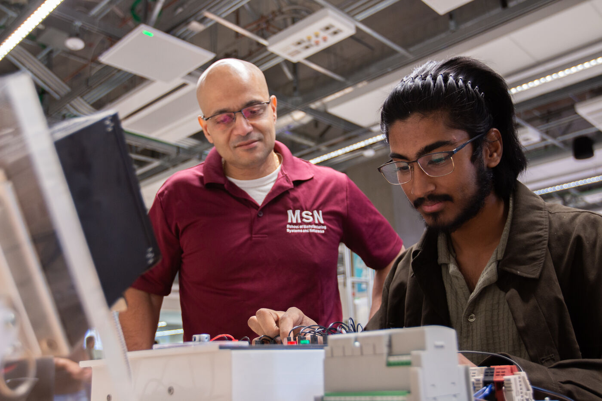
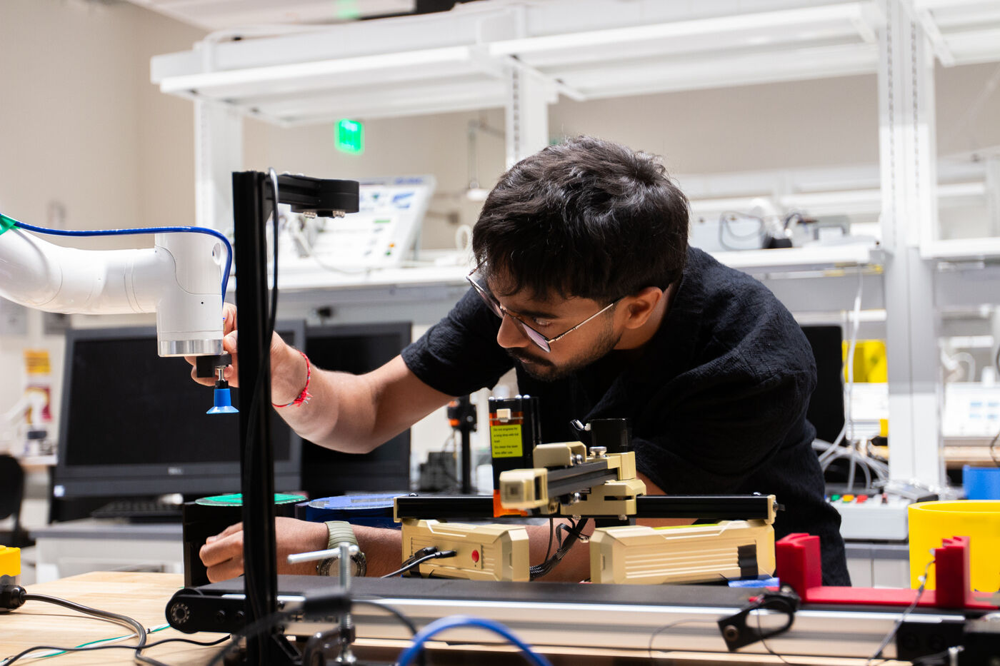
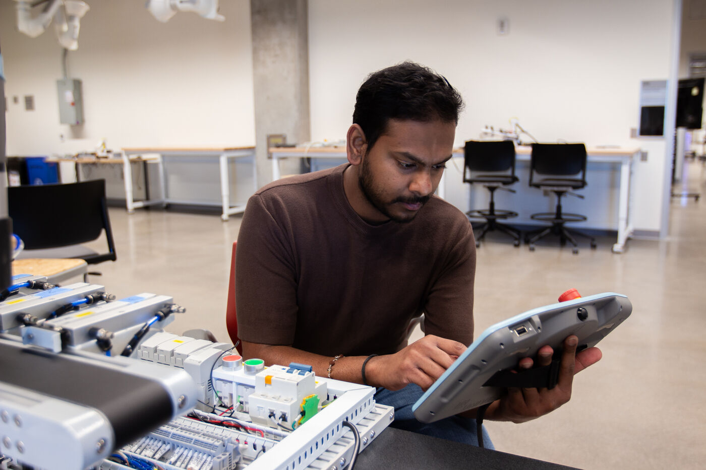

Learn

Courses and training
Graduate coursework in robotic systems and hands-on automation training for industry, taught in the lab.
School of Manufacturing Systems and Networks · Arizona State University
An instructional laboratory for robotics and automation in Room 231 of ISTB 12 on ASU's Polytechnic campus, supporting the Robotics and Autonomous Systems program with industrial robot arms, programmable logic controllers, and simulation-based instruction.
What the lab offers
The lab is a teaching space first: everything in it exists so students can learn robotics and manufacturing by doing.
Learn

Graduate coursework in robotic systems and hands-on automation training for industry, taught in the lab.
Build

Industrial and collaborative robot arms, PLC workbenches, 3D printing, CNC machining, and simulation workstations.
Guides

Complete, step-by-step laboratory guides - simulation, articulated robots, and industrial automation.
Research

Course projects and PhD research built on the lab's robots, PLCs, and simulation platforms.